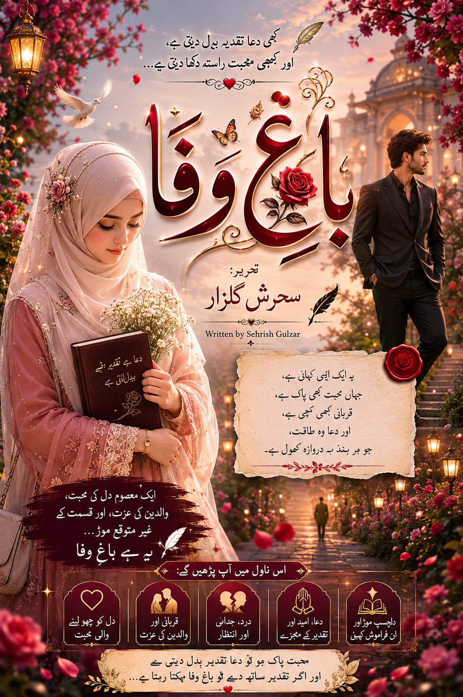

ناول: باغِ وفا
مصنفہ: سحرش گلزار

تعارف:
یہ کہانی ہے محبت، قربانی اور رشتوں کے تقدس کی۔ زندگی کے اتار چڑھاؤ اور قسمت کے فیصلوں کے گرد گھومتا ایک خوبصورت رومانوی ناول، جو آپ کے دل کو چھو جائے گا۔
تمام اقساط دیکھیں
▼
قسط نمبر 1
قسط نمبر 2
قسط نمبر 3
قسط نمبر 4
قسط نمبر 5
قسط نمبر 6
قسط نمبر 7